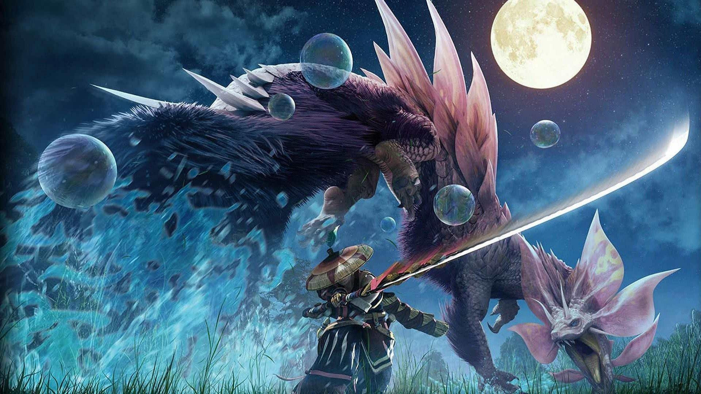
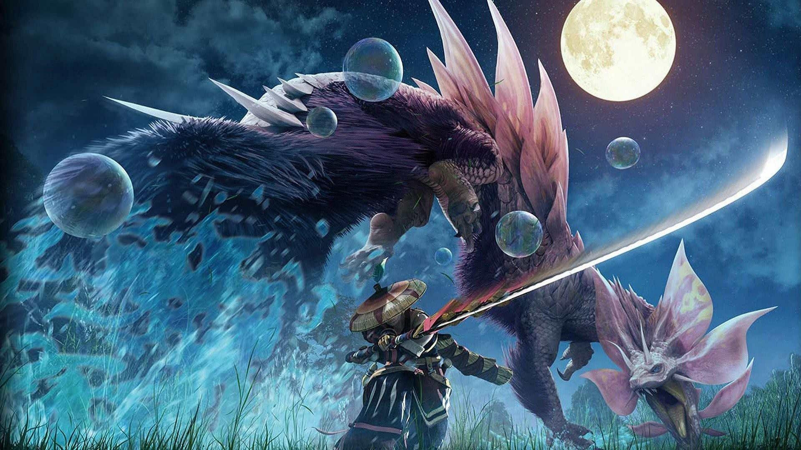
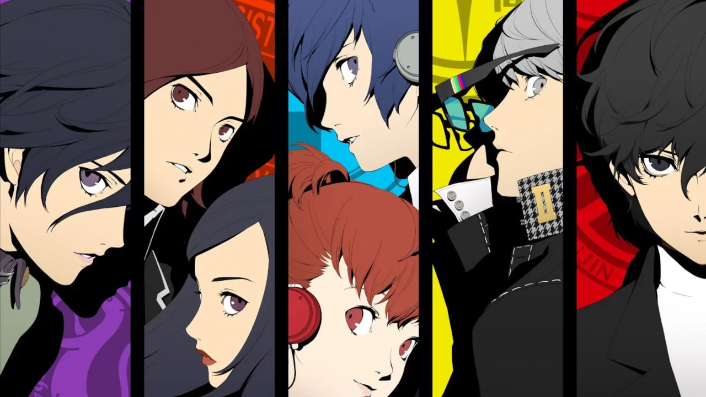
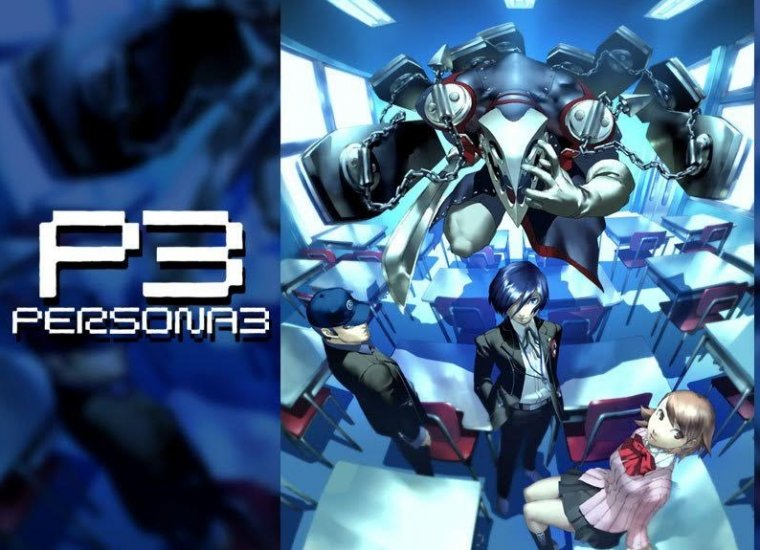
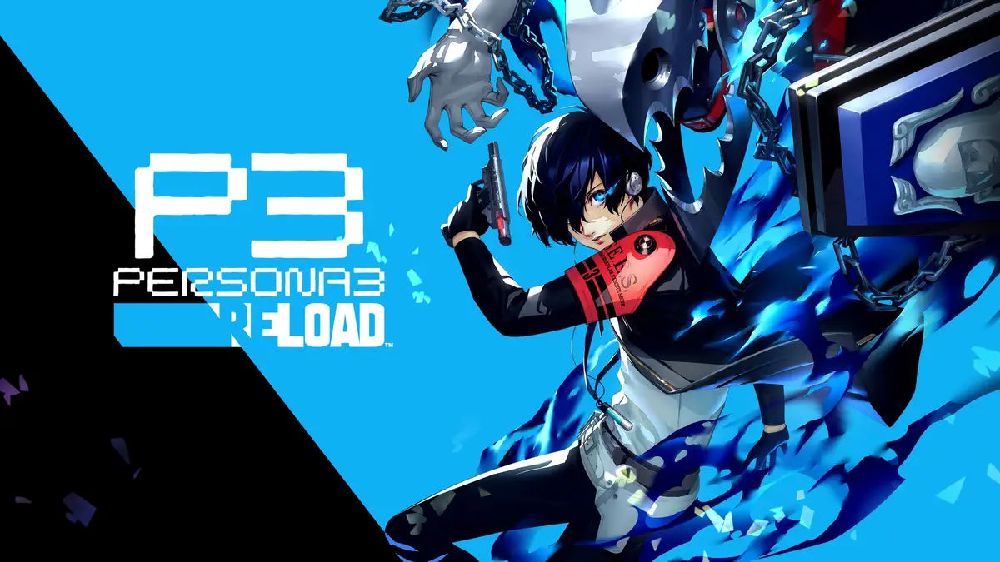
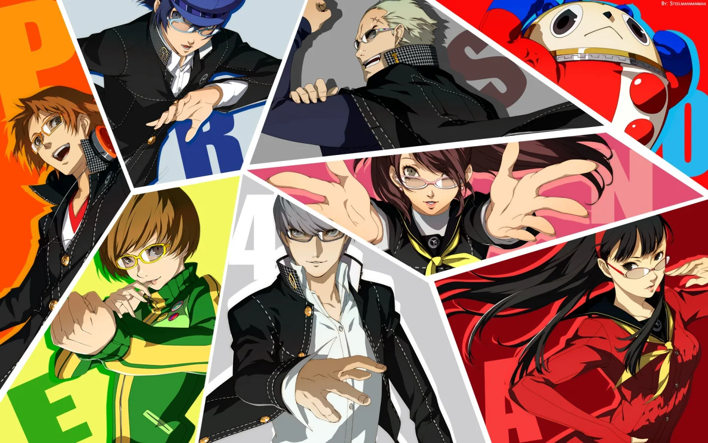
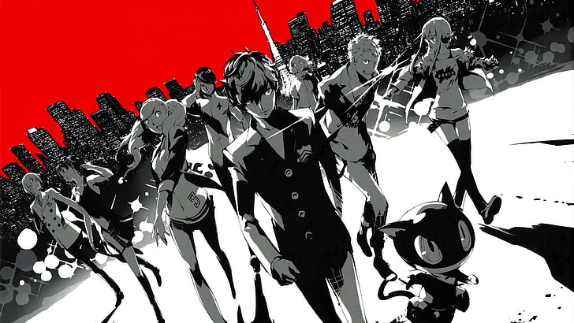

Dos Joyas de los videojuegos que no se arrepentira de jugar
¿Esta cansado de jugar shooters? quiere jugar un nuevo juego de un genero totalmente diferente al shooter para variar un rato al mercado sobresaturado de este genero, pues aqui les presentamos tres opciones de juegos para que usted.
Monster Hunter
¿Que es Monster Hunter? Monster hunter es una seria desarrollada y publicada por capcom desde 2004,
con su primera entrega Monster Hunter para la playstation 2 y que gracias a Monster Hunter World
(juego lanzado en 2018) se ha convertido en uno de los juegos mas vendidos de capcom, pero mas
especificamente
¿Que es Monster Hunter?
Monster Hunter es un juego que como su nombre lo dice, trata de cazar monstruos, pero que lo hace tan buen juego, bueno gracias a ya casi 20 años de esta saga, capcom ha ha hecho que este videojuego haya alcanzado una gran cantidad fans a lo largo del mundo y posicionarse como el unico juego tipo Hunting game bueno que encontraras en la actualidad, su premisa es simple, en todos los juegos eres un cazador que llega a una aldea o base del gremio de cazadores, tu eres un cazador que tiene que acabar con una amenaza que afecta a la zona, y en las primeras misiones tal vez te manden a recolectar objetos como la tipica historia japonesa, pero una vez que acabes esas misiones, empieza lo que es verdaderamente adictivo, cazar monstruos que aqui se les conoce como wyverns o dependiendo del monstruo dragones ancianos.
 

Una vez que te encuentres con tu primer monstruo grande y acabes con el lo que pasa ahora es que vuelves a la aldea o base, usas las piezas obtenidas para mejorarte y despues volver a cazar otro monstruo pero mas fuerte y a primera vista se que suena repetitivo o tedioso y aburrido, pero creeme no lo es, ya que ademas de un gameplay muy variado ya que si juegas las entregas recientes tendras 14 armas que podras escoger dependiendo a como se adapte tu manera de jugar tambien ofrece batallas muy diferentes una de la otra y retos que van aumentando también, como por ejemplo en Monster Hunter World empiezas cazando una iguana gigante conocida como gran jagras, pero terminas enfrentando a un monstruo que puede destruir ecosistemas enteros y creeme no es nada facil, a su vez Monster Hunter ofrece un mundo vivo en las mas recientes entregas donde puedes ver como estas bestias tienen comportamientos como el cazar, dormir, aullar a la luna pelear por territorio, entre muchas otras.

Ademas Monster Hunter desde sus inicios siempre a permitido el cooperativo en linea donde puedes jugar con tus amigos o con gente random que entre en tus cazerias y puedo decir que la comunidad de este juego es una de las mas sanas que he visto nunca, ya que siempre estan dispuestos a ayudar a gente nueva y apoyarlos en lo que necesiten haciendo que los nuevos no se sientan frustados por no poder acabar con el monstruo gigante en turno, es un juego que sin duda recomiendo y uno en el que puedes entrar sin importar la entrega ya que la historia no es mas que una excusa para cazar y que no tiene relacion entre juegos asi que usted puede entrar en cualquier juego que le apetezca y que ademas le dara horas de juego infinitas, ya que siempre puedes cazar de manera infinita pero si solo desea entrar y pasar algunas cosas he de decir que los monster hunter tienen promedios de hora de juego altisimos que van desde las 100 hasta las 3000 horas asi que tiene para jugar hasta que se canse y si me deja recomendar una entrega en especifico por la que empezar, recomendaria sin duda alguna Monster Hunter World, con el no se hara una mala imagen de la saga ya que es sin duda alguna el mejor para gente nueva, o si no quiere pagar por una entrega en este momento le podemos recomendar probar Monster Hunter Rise, que se encuentra disponible en Gamepass.
Persona o Shin Megami Tensei: Persona
Persona (ペルソナ Perusona) (también conocida como: Shin Megami Tensei: Persona) es una serie de videojuegos RPG desarrollados y publicados por Atlus. Esta saga es un spin-off de la serie de videojuegos Megami Tensei, la serie Persona se centra sobre grupos de adolescentes que tienen la habilidad de invocar facetas de sus psiques conocidas como "Personas".
La saga Persona desde su tercer juego se caracteriza por ademas de ser un RPG, es un simulador de vida, donde los jugadores ademas de adentrarse en mazmorras, debera cumplir su papel como estudiante en una escuela ficticia, donde se tendra que gestionar el tiempo ya que el juego funciona a base de un calendario escolar donde avanzaran los dias y y si usted quiere hacer todo lo que brinda este juego tendra que gestionar bien su tiempo, ademas que los juegos ofrecen un minimo de 80 horas que mientras mas avanza en la saga aumenta el tiempo en que usted puede jugarlos, ademas que la banda sonora y el arte de la saga es magnifica, un deleite audiovisual y no hablar de sus historias que son muy buenas y que dependiendo del juego incluso hasta pueden hacer que sueltes una lagrima por haberle tomado cariño a estos personajes tan entrañables, a continuación en esta parte le recomendaremos los juegos de esta gran saga que si usted es fan de los RPG por turnos no se arrepentira de jugar Persona 3, 4 y 5 son los recomendaremos, usted dira por que no Persona 1 y 2 la razon es por que esos no existen ni para atlus y por que no se han jugado por el momento tenga buen dia :D
Persona 3 version FES o Portable

Un adolescente que quedó huérfano a temprana edad regresa a la ciudad de su infancia, Iwatodai. Poco
después de ser transferido a la escuela preparatoria Gekkoukan, es atacado por sombras, criaturas
que se alimentan de la mente de sus víctimas. Este ataque despierta su Persona interior, Orpheus, su
única oportunidad para vencer a estas criaturas de la noche. Pronto descubre que otros estudiantes
de la escuela también tienen ese poder. De ellos aprende todo sobre la "Dark Hour" (Hora oscura),
una hora oculta que separa un día del siguiente; y que sume al mundo en las sombras. Todo se
paraliza, dejando campar a sus anchas a todas las sombras. El protagonista se une al grupo
"Specialized Extracurricular Execution Squad" (SEES), y con sus compañeros, lucha contra la amenaza
de las sombras, y a la vez que
exploran el Tartarus, una extraña y gigantesca torre repleta de peligros en la que se transforma la
escuela durante la Dark Hour.
Persona 3 Reload
Le recomendamos si quiere esperar a una version mas moderna y accesible espere a Persona 3:Reload, el remake de esa gran entrega que llegara el 02/02/2024 e inclusive estara en Gamepass dia 1 si no desea comprarla.
Persona 4 Golden
En 2011, el protagonista (que es nombrado por el jugador) es enviado a la ciudad rural de Inaba desde la gran ciudad, ya que sus padres se han ido a trabajar al extranjero. Vive con su tío Ryotaro Dojima y su prima pequeña Nanako Dojima, y asiste a la preparatoria Yasogami, donde se hace amigo de Yosuke Hanamura, Chie Satonaka y Yukiko Amagi. Su tío Ryotaro trabaja de detective en al policía y su principal asistente es un hombre llamado Tohru Adachi. En su primer día en Inaba, el protagonista tiene un extraño sueño en el que aprende a usar a un Persona en batalla, concretamente su primer Persona, Izanagi. A través de Chie, el protagonista y Yosuke se dan cuenta de que la leyenda urbana de "Medianoche TV" (Midnight Channel en la versión Norteamericana) es cierta. Si en un día lluvioso se mira una televisión apagada a las doce de la noche, la televisión se encenderá sola y se verá una extraña figura. Al día siguiente, la presentadora Mayumi Yamano, es encontrada muerta, colgada boca abajo desde un poste de teléfonos. Cuando el protagonista mira por primera vez Medianoche TV, se da cuenta de que puede entrar físicamente dentro de su televisión, pero es demasiado pequeña para meter su cuerpo entero.
Persona 5 Royal
Persona 5 es un juego de fantasía basada en la realidad que sigue a un grupo de estudiantes de secundaria con problemas: Ren Amamiya y un singular grupo de personas que conoce. Estos adolescentes perturbados y con problemas se dan cuenta gradualmente de que están viviendo en un mundo tóxico y peligroso que se asemeja a una prisión llena de esclavitud, opresión e injusticia, gobernada por adultos corruptos y retorcidos. No pueden vivir con el sistema y no pueden vivir sin él, y simplemente existir significa que están en riesgo de ser condenados y condenados a una vida de esclavitud. Para buscar la libertad, la liberación y la justicia, viven dos vidas, una como estudiantes normales y otra como los infames Ladrones Fantasma de Corazones. Usando una misteriosa aplicación de móvil y un gato que puede transformarse en una furgoneta, emprenden aventuras fantásticas utilizando poderes de otro mundo para entrar en los corazones de las personas (específicamente, los adultos corruptos en posiciones de poder) con el fin de reformarlos y transformarlos.
Y estas fueron recomendaciones del dia de hoy, esperemos y les hayan convencido estas opciones, les aseguramos que le cambiaran su vida, son tremendas joyas, ademas son juegos que los van a mantener entretenidos a la pantalla durante un muy buen tiempo, he incluso le dara una de las experiencias mas unicas e inolvidables e incluso en el caso de Monster Hunter puede llegar a conocer gente muy amigable, no se espere a comprarlos, puede probar minimo un juego de estas sagas por medio de GamePass.